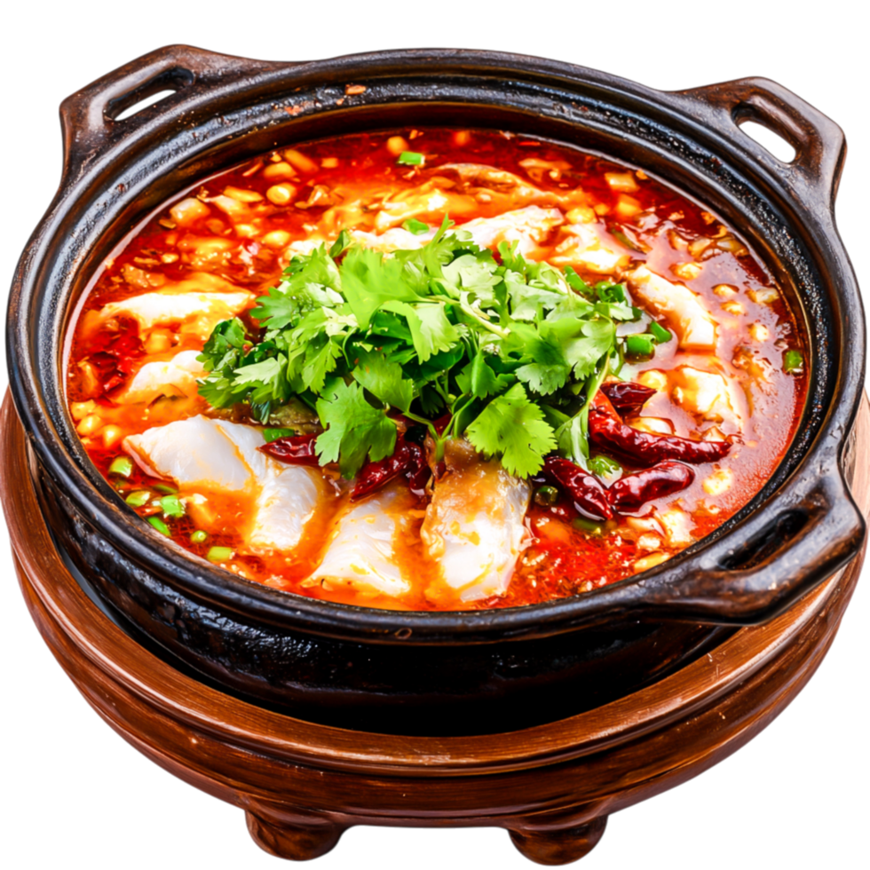

Spicy Fish Soup

A exotic fish soup with shrimp and yogurt
Ingredients
- cooking spray
- 1/2 medium onion, chopped
- 1 clove garlic, minced
- 1 tablespoon chili powder
- 1 can canned green chile peppers, chopped
- 1 teaspoon ground cumin
- 1 1/2 cips canned peeled and diced tomatoes
- 1/2 cup chopped green bell pepper
- 1/2 cup medium shrimp, peeled and deveined
- 1/2 pound cod fillets, cut into chunks
- 3/4 cup plain nonfat yogurt
Steps
-
Gather all ingredients.
-
Spray a large saucepan with cooking spray and heat over medium-high heat. Add onion and sauté, stirring often, until translucent, about 5 minutes. Add garlic and chili powder; sauté until fragrant, about 2 minutes.
-
Stir in chicken broth, chile peppers, and cumin; bring to a boil. Reduce the heat to low, cover, and simmer for 20 minutes.
-
Add tomatoes, bell pepper, shrimp, and cod; increase the heat to medium and return to a boil. Reduce the heat to low, cover, and simmer for 5 more minutes.
-
Gradually stir in yogurt until heated through.
Home